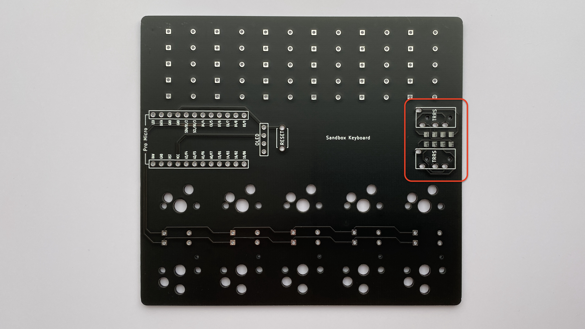
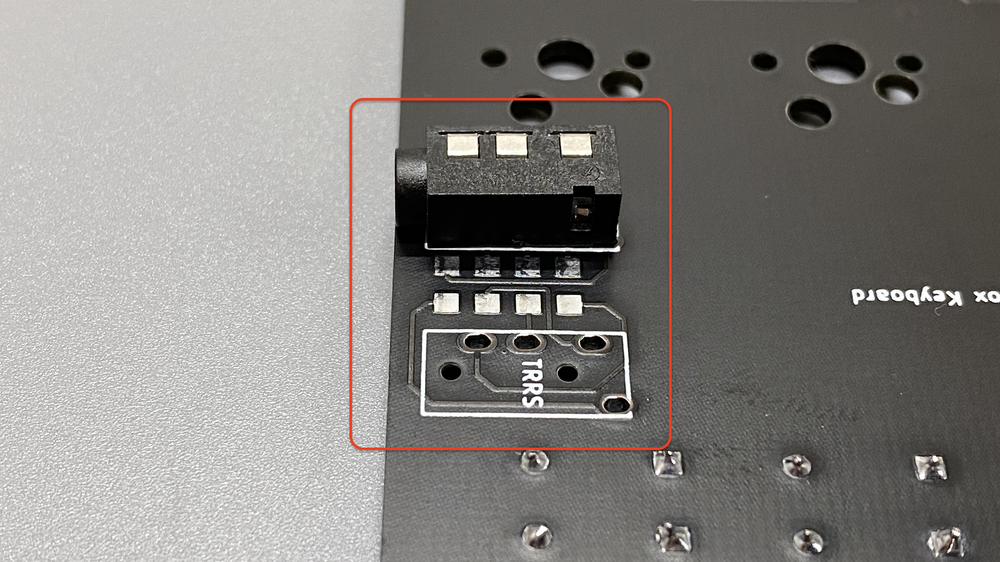
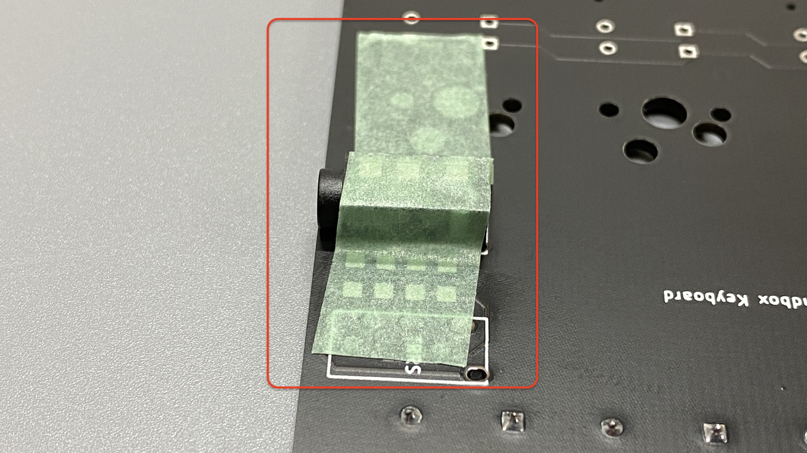
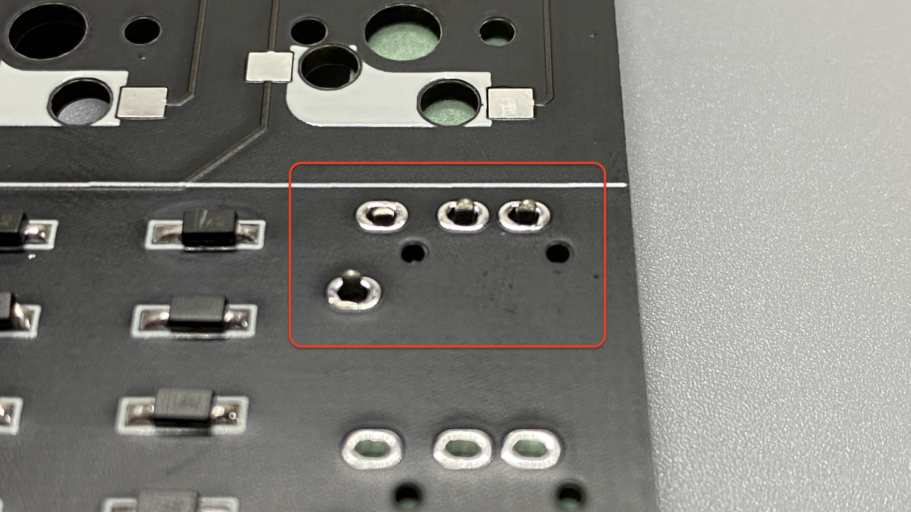
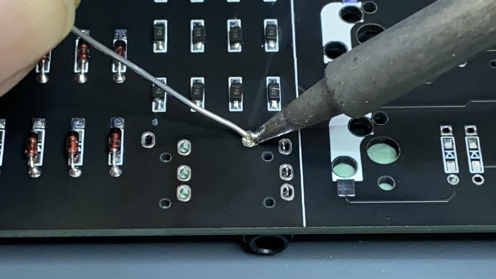
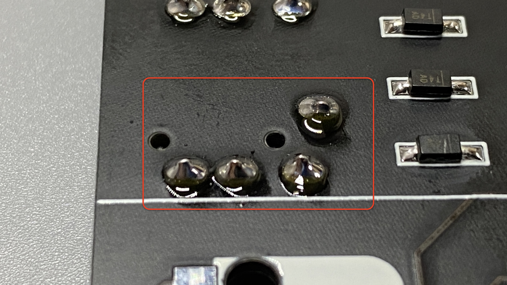
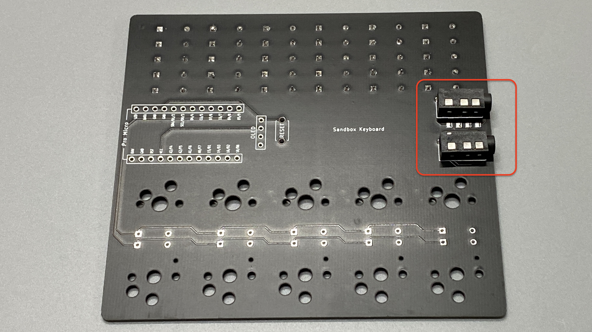
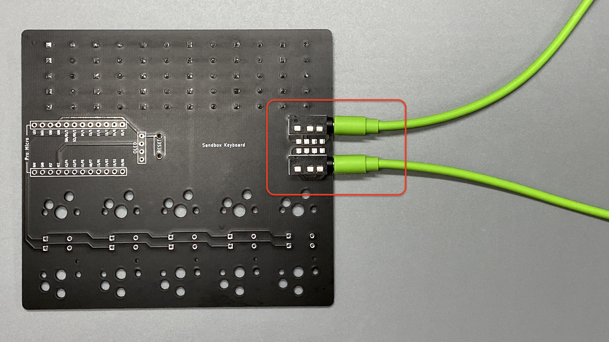
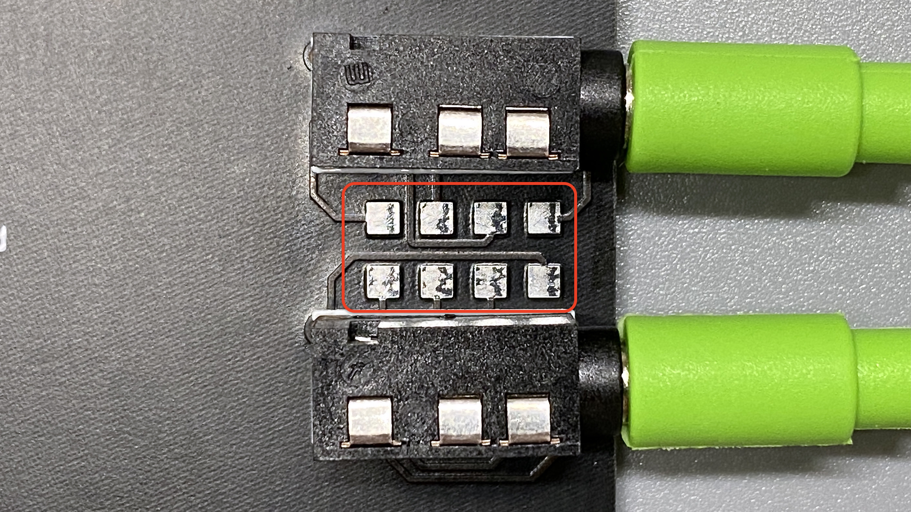
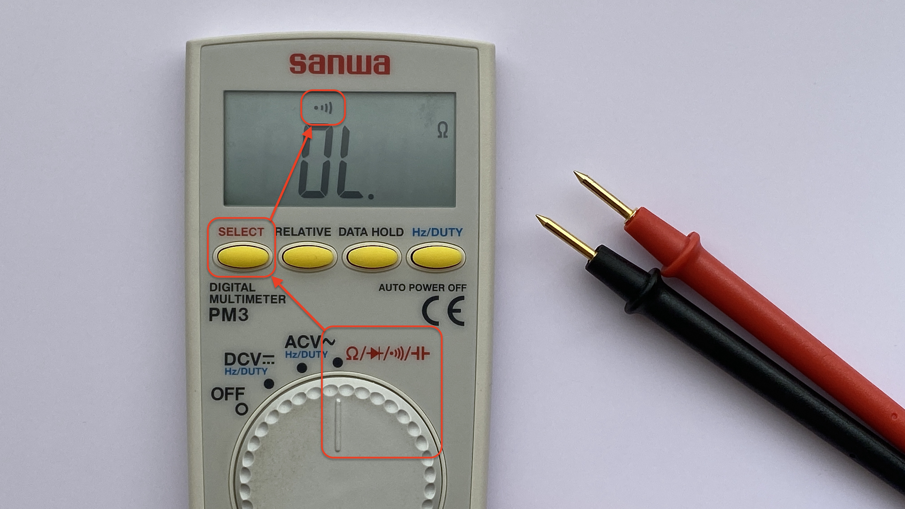

TRRSジャックのはんだ付け
TRRSジャック
TRRSジャックはスルーホールタイプなので、スルーホールタイプのダイオードと同じようにはんだ付けすれば大丈夫です。 sandbox keyboardは単体で動かすので、はんだ付け練習専用になるのですが、ちょっとした機能をつけてあるので後述します。
はんだ付け
-
こちらのスペースを使います
 -
ダイオードをつけたのとは反対側の面から部品をつけます。「TRRS」とシルク（白い印刷）で書かれた面からTRRSジャックを挿してください。
 -
マスキングテープでしっかり固定します。斜めにズレるとカッコ悪いのでなるべく垂直にしてください。
 -
裏返します。足の長さはちょうど良いのでこのままはんだ付けに進みます。
 -
スルーホールタイプダイオードと同じように母材（部品の足）とパッドにコテ先をあてて、ハンダを流し込んでいきます。
 -
4つの足をはんだ付けします
 -
2つとも取り付けます

おまけ：ケーブルテスター
-
TRRSケーブルの両端を2つのTRRSジャックに差し込みます。
 -
TRRSジャックの間にあるパッドどうしをテスターでチェックします
 -
テスターを導通チェックモードにします
 -
チェックポイント
- 隣同士のパッドは導通する（ピーと音が鳴る）
- これが鳴らないと、ケーブル内で断線している可能性があります
- それ以外のパッドでは導通しない（音が鳴らない）
- これが鳴ってしまうと、ケーブル内でショートしている可能性があります
- 隣同士のパッドは導通する（ピーと音が鳴る）


※そもそもTRRSジャックの破損、TRRSジャックのはんだミス、基板の破損などの可能性もあるので、一度正常に動いているTRRSケーブルで正常測定を確認してからの方が信頼がおけます。
はんだ付け練習だけだともったいないので、ちょっとした機能をつけてみました。
分割キーボードを使ってて、片方が動かない時などはこちらの簡易チェック機能を使ってみてください。